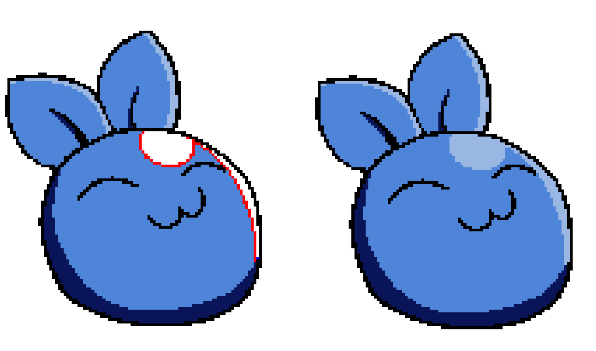
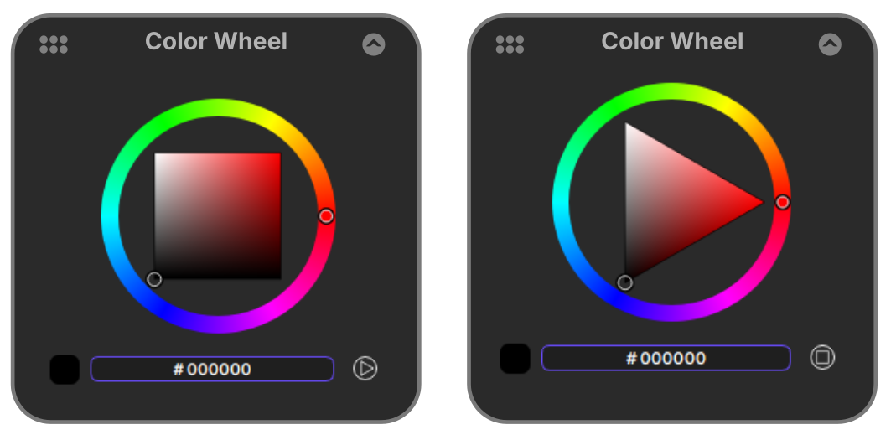

Animation the way
it was meant to be.
Nurture2D is a focused, distraction-free 2D animation tool built for hand-drawn artists. Powerful tools. Zero cost.
Everything an animator needs.
Nothing they don't.
Built from the ground up for traditional 2D workflows — from rough sketches to clean lineart to final color.
Paper-like drawing, built for animators.
Responsive brushes, onion skinning, layers, and pressure curves that feel like real pencil on paper. Five pen presets optimised for no-antialiasing, a custom sketch brush engine with natural pencil textures, and a draw-behind feature for complex layering.
- Pen Tool presets with color optimisation
- Custom sketch brush with pressure curves
- Draw behind existing elements
- Onion skinning with shift & trace

Color that works with your lines, not against them.
The auto color line fill system intelligently fills non-antialiased preset lines. Fill transparent pixel gaps with lasso and rectangle selection. Prevent accidental fills of lineart with intelligent color detection.
- Auto Color Line fill for cell shading
- Transparent gap filling tools
- Fill tools ignore target color
- Dplate tool for character color sheets
Pick color the way your brain works.
Toggle between square and triangle color wheels to match your preferred workflow. A popup color picker appears right at your cursor position — no reaching across the screen, no interrupting your flow.
- Switchable square & triangle wheels
- Popup color picker at cursor
- Decluttered, efficient color selection

Frame-by-frame control, exactly as intended.
Accurate frame timing, exposure control, and flipbook playback give you full command over every drawing. Export to image sequences in separate folders, ready for production and post-processing pipelines.
- Accurate frame timing & exposure control
- Flipbook playback
- Export to numbered image sequences
- Organised output folders per export
A note from the developer
Nurture2D is a personal fork created by a single developer. While I've worked diligently to deliver a feature-rich animation application, bugs and issues may occur. I'm not a professional software developer, but with the help of AI tools I've built something I hope is genuinely useful to the community. Your feedback and patience are greatly appreciated.